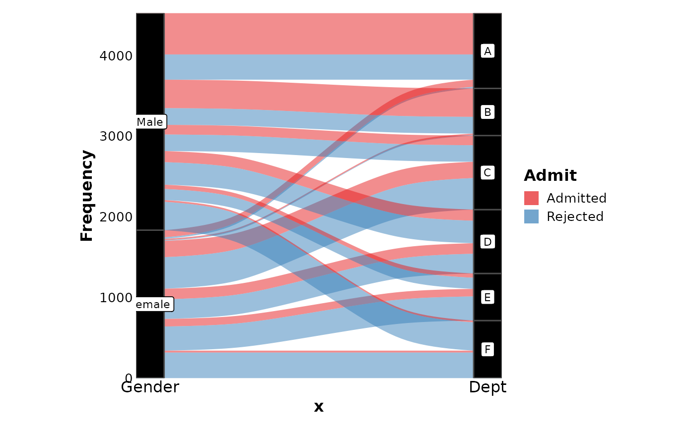
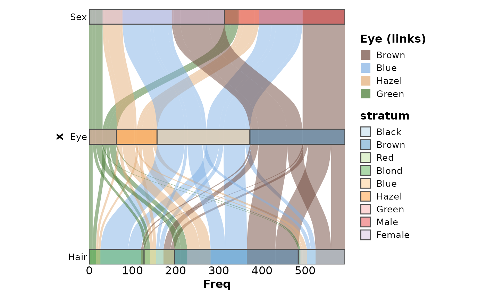
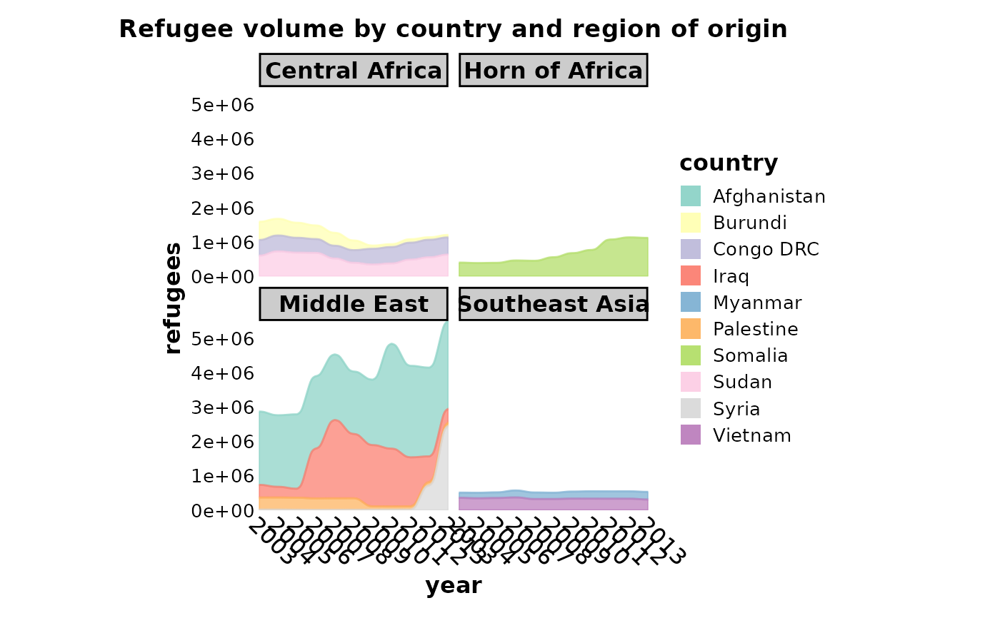
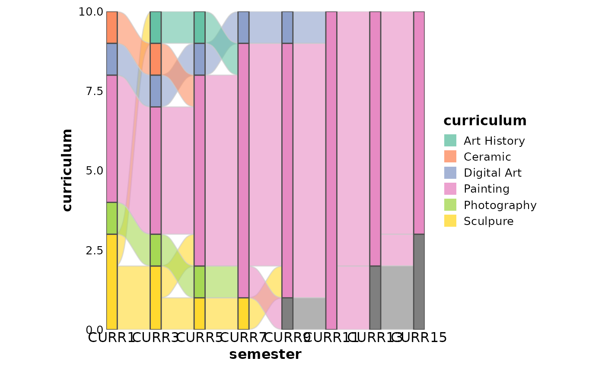
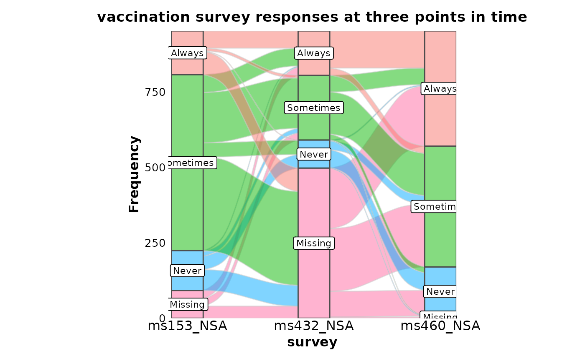
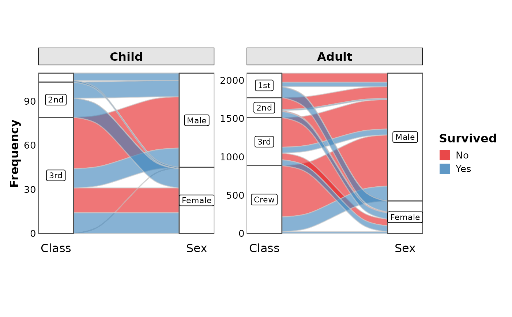
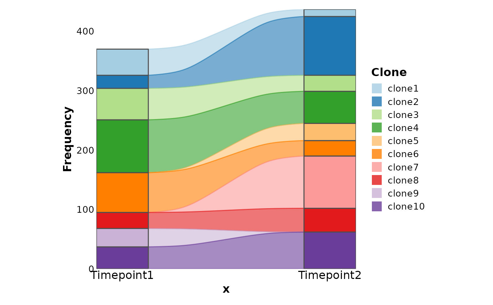
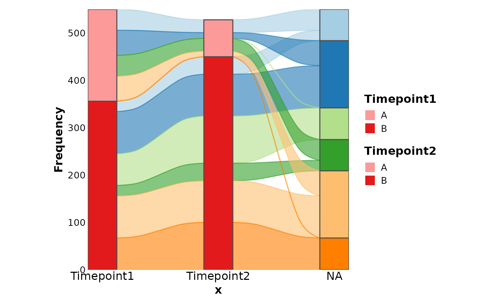

A plot visualizing flow/movement/change from one state to another or one time to another.
AlluvialPlot is an alias of SankeyPlot.
Usage
SankeyPlot(
data,
in_form = c("auto", "long", "lodes", "wide", "alluvia", "counts"),
x,
x_sep = "_",
y = NULL,
stratum = NULL,
stratum_sep = "_",
alluvium = NULL,
alluvium_sep = "_",
split_by = NULL,
split_by_sep = "_",
keep_empty = TRUE,
flow = FALSE,
expand = c(0, 0, 0, 0),
nodes_legend = c("auto", "separate", "merge", "none"),
nodes_color = "grey30",
links_fill_by = NULL,
links_fill_by_sep = "_",
links_name = NULL,
links_color = "gray80",
nodes_palette = "Paired",
nodes_palcolor = NULL,
nodes_alpha = 1,
nodes_label = FALSE,
nodes_label_miny = 0,
nodes_width = 0.25,
links_palette = "Paired",
links_palcolor = NULL,
links_alpha = 0.6,
legend.box = "vertical",
x_text_angle = 0,
aspect.ratio = 1,
legend.position = "right",
legend.direction = "vertical",
flip = FALSE,
theme = "theme_ggforge",
theme_args = list(),
title = NULL,
subtitle = NULL,
xlab = NULL,
ylab = NULL,
facet_by = NULL,
facet_scales = "fixed",
facet_ncol = NULL,
facet_nrow = NULL,
facet_byrow = TRUE,
seed = 8525,
combine = TRUE,
nrow = NULL,
ncol = NULL,
byrow = TRUE,
axes = NULL,
axis_titles = axes,
guides = NULL,
design = NULL,
...
)
AlluvialPlot(
data,
in_form = c("auto", "long", "lodes", "wide", "alluvia", "counts"),
x,
x_sep = "_",
y = NULL,
stratum = NULL,
stratum_sep = "_",
alluvium = NULL,
alluvium_sep = "_",
split_by = NULL,
split_by_sep = "_",
keep_empty = TRUE,
flow = FALSE,
expand = c(0, 0, 0, 0),
nodes_legend = c("auto", "separate", "merge", "none"),
nodes_color = "grey30",
links_fill_by = NULL,
links_fill_by_sep = "_",
links_name = NULL,
links_color = "gray80",
nodes_palette = "Paired",
nodes_palcolor = NULL,
nodes_alpha = 1,
nodes_label = FALSE,
nodes_label_miny = 0,
nodes_width = 0.25,
links_palette = "Paired",
links_palcolor = NULL,
links_alpha = 0.6,
legend.box = "vertical",
x_text_angle = 0,
aspect.ratio = 1,
legend.position = "right",
legend.direction = "vertical",
flip = FALSE,
theme = "theme_ggforge",
theme_args = list(),
title = NULL,
subtitle = NULL,
xlab = NULL,
ylab = NULL,
facet_by = NULL,
facet_scales = "fixed",
facet_ncol = NULL,
facet_nrow = NULL,
facet_byrow = TRUE,
seed = 8525,
combine = TRUE,
nrow = NULL,
ncol = NULL,
byrow = TRUE,
axes = NULL,
axis_titles = axes,
guides = NULL,
design = NULL,
...
)Arguments
- data
A data frame in following possible formats:
"long" or "lodes": A long format with columns for
x,stratum,alluvium, andy.x(required, single columns or concatenated byx_sep) is the column name to plot on the x-axis,stratum(defaults tolinks_fill_by) is the column name to group the nodes for eachx,alluvium(required) is the column name to define the links, andyis the frequency of eachx,stratum, andalluvium."wide" or "alluvia": A wide format with columns for
x.x(required, multiple columns,x_sepwon't be used) are the columns to plot on the x-axis,stratumandalluviumwill be ignored. See ggalluvial::to_lodes_form for more details."counts": A format with counts being provides under each
x.x(required, multiple columns,x_sepwon't be used) are the columns to plot on the x-axis. When the first element ofxis ".", values oflinks_fill_by(required) will be added to the plot as the first column of nodes. It is useful to show how the links are flowed from the source to the targets."auto" (default): Automatically determine the format based on the columns provided. When the length of
xis greater than 1 and allxcolumns are numeric, "counts" format will be used. When the length ofxis greater than 1 and ggalluvial::is_alluvia_form returns TRUE, "alluvia" format will be used. Otherwise, "lodes" format will be tried.
- in_form
A character string to specify the format of the data. Possible values are "auto", "long", "lodes", "wide", "alluvia", and "counts".
- x
A character string of the column name to plot on the x-axis. See
datafor more details.- x_sep
A character string to concatenate the columns in
x, if multiple columns are provided.- y
A character string of the column name to plot on the y-axis. When
in_formis "counts",ywill be ignored. Otherwise, it defaults to the count of eachx,stratum,alluviumandlinks_fill_by.- stratum
A character string of the column name to group the nodes for each
x. Seedatafor more details.- stratum_sep
A character string to concatenate the columns in
stratum, if multiple columns are provided.- alluvium
A character string of the column name to define the links. See
datafor more details.- alluvium_sep
A character string to concatenate the columns in
alluvium, if multiple columns are provided.- split_by
Column name(s) to split data into multiple plots
- split_by_sep
Separator when concatenating multiple split_by columns
- keep_empty
A logical value to keep the empty nodes.
- flow
A logical value to use ggalluvial::geom_flow instead of ggalluvial::geom_alluvium.
- expand
Expansion values for axes (CSS-like: top, right, bottom, left)
- nodes_legend
Controls how the legend of nodes will be shown. Possible values are:
"merge": Merge the legends of nodes. That is only one legend will be shown for all nodes.
"separate": Show the legends of nodes separately. That is, nodes on each
xwill have their own legend."none": Do not show the legend of nodes.
"auto": Automatically determine how to show the legend. When
nodes_labelis TRUE, "none" will apply. Whennodes_labelis FALSE, and if stratum is the same as links_fill_by, "none" will apply. If there is any overlapping values between the nodes on differentx, "merge" will apply. Otherwise, "separate" will apply.
- nodes_color
A character string to color the nodes. Use a special value ".fill" to use the same color as the fill.
- links_fill_by
A character string of the column name to fill the links.
- links_fill_by_sep
A character string to concatenate the columns in
links_fill_by, if multiple columns are provided.- links_name
A character string to name the legend of links.
- links_color
A character string to color the borders of links. Use a special value ".fill" to use the same color as the fill.
- nodes_palette
A character string to specify the palette of nodes fill.
- nodes_palcolor
A character vector to specify the colors of nodes fill.
- nodes_alpha
A numeric value to specify the transparency of nodes fill.
- nodes_label
A logical value to show the labels on the nodes.
- nodes_label_miny
A numeric value to specify the minimum y (frequency) to show the labels.
- nodes_width
A numeric value to specify the width of nodes.
- links_palette
A character string to specify the palette of links fill.
- links_palcolor
A character vector to specify the colors of links fill.
- links_alpha
A numeric value to specify the transparency of links fill.
- legend.box
A character string to specify the box of the legend, either "vertical" or "horizontal".
- x_text_angle
Angle for x-axis text
- aspect.ratio
Aspect ratio of plot panel
- legend.position
Legend position: "none", "left", "right", "bottom", "top"
- legend.direction
Legend direction: "horizontal" or "vertical"
- flip
A logical value to flip the plot.
- theme
Theme name (string) or theme function
- theme_args
List of arguments passed to theme function
- title
Plot title
- subtitle
Plot subtitle
- xlab
X-axis label
- ylab
Y-axis label
- facet_by
Column name(s) for faceting the plot
- facet_scales
Scales for facets: "fixed", "free", "free_x", "free_y"
- facet_ncol
Number of columns in facet layout
- facet_nrow
Number of rows in facet layout
- facet_byrow
Fill facets by row (TRUE) or column (FALSE)
- seed
Random seed for reproducibility
- combine
Whether to combine split plots into one
- nrow
Number of rows when combining plots
- ncol
Number of columns when combining plots
- byrow
Fill combined plots by row
- axes
How to handle axes in combined plots ("keep", "collect", "collect_x", "collect_y")
- axis_titles
How to handle axis titles in combined plots
- guides
How to handle guides in combined plots ("collect", "keep", "auto")
- design
Custom layout design for combined plots
- ...
Other arguments to pass to ggalluvial::geom_alluvium or ggalluvial::geom_flow.
Examples
# \donttest{
# Reproduce the examples in ggalluvial
set.seed(8525)
data(UCBAdmissions, package = "datasets")
UCBAdmissions <- as.data.frame(UCBAdmissions)
SankeyPlot(as.data.frame(UCBAdmissions),
x = c("Gender", "Dept"),
y = "Freq", nodes_width = 1 / 12, links_fill_by = "Admit", nodes_label = TRUE,
nodes_palette = "simspec", links_palette = "Set1", links_alpha = 0.5,
nodes_palcolor = "black", links_color = "transparent"
)

data(HairEyeColor, package = "datasets")
SankeyPlot(as.data.frame(HairEyeColor),
x = c("Hair", "Eye", "Sex"),
y = "Freq", links_fill_by = "Eye", nodes_width = 1 / 8, nodes_alpha = 0.4,
flip = TRUE, reverse = FALSE, knot.pos = 0, links_color = "transparent",
ylab = "Freq", links_alpha = 0.5, links_name = "Eye (links)", links_palcolor = c(
Brown = "#70493D", Hazel = "#E2AC76", Green = "#3F752B", Blue = "#81B0E4"
)
)

data(Refugees, package = "alluvial")
country_regions <- c(
Afghanistan = "Middle East",
Burundi = "Central Africa",
`Congo DRC` = "Central Africa",
Iraq = "Middle East",
Myanmar = "Southeast Asia",
Palestine = "Middle East",
Somalia = "Horn of Africa",
Sudan = "Central Africa",
Syria = "Middle East",
Vietnam = "Southeast Asia"
)
Refugees$region <- country_regions[Refugees$country]
SankeyPlot(Refugees,
x = "year", y = "refugees", alluvium = "country",
links_fill_by = "country", links_color = ".fill", links_alpha = 0.75,
links_palette = "Set3", facet_by = "region", x_text_angle = -45, nodes_legend = "none",
theme_args = list(strip.background = ggplot2::element_rect(fill = "grey80")),
decreasing = FALSE, nodes_width = 0, nodes_color = "transparent", ylab = "refugees",
title = "Refugee volume by country and region of origin"
)

data(majors, package = "ggalluvial")
majors$curriculum <- as.factor(majors$curriculum)
SankeyPlot(majors,
x = "semester", stratum = "curriculum", alluvium = "student",
links_fill_by = "curriculum", flow = TRUE, stat = "alluvium", nodes_palette = "Set2",
links_palette = "Set2"
)

data(vaccinations, package = "ggalluvial")
vaccinations <- transform(vaccinations,
response = factor(response, rev(levels(response)))
)
SankeyPlot(vaccinations,
x = "survey", stratum = "response", alluvium = "subject",
y = "freq", links_fill_by = "response", nodes_label = TRUE, nodes_alpha = 0.5,
nodes_palette = "seurat", links_palette = "seurat", links_alpha = 0.5,
legend.position = "none", flow = TRUE, expand = c(0, 0, 0, .15), stat = "alluvium",
title = "vaccination survey responses at three points in time"
)

data(Titanic, package = "datasets")
SankeyPlot(as.data.frame(Titanic),
x = c("Class", "Sex"), y = "Freq",
links_fill_by = "Survived", flow = TRUE, facet_by = "Age", facet_scales = "free_y",
nodes_label = TRUE, expand = c(0.05, 0), xlab = "", links_palette = "Set1",
nodes_palcolor = "white", nodes_label_miny = 10
)

# Simulated examples
df <- data.frame(
Clone = paste0("clone", 1:10),
Timepoint1 = sample(c(rep(0, 30), 1:100), 10),
Timepoint2 = sample(c(rep(0, 30), 1:100), 10)
)
SankeyPlot(df,
x = c("Timepoint1", "Timepoint2"), alluvium = "Clone",
links_color = ".fill"
)

df <- data.frame(
Clone = rep(paste0("clone", 1:6), each = 2),
Timepoint1 = sample(c(rep(0, 30), 1:100), 6),
Timepoint2 = sample(c(rep(0, 30), 1:100), 6),
Group = rep(c("A", "B"), 6)
)
SankeyPlot(df,
x = c(".", "Timepoint1", "Timepoint2"),
stratum = "Group", links_fill_by = "Clone", links_color = ".fill"
)
#> Warning: No shared levels found between `names(values)` of the manual scale and the
#> data's fill values.
#> Warning: No shared levels found between `names(values)` of the manual scale and the
#> data's fill values.
#> Warning: No shared levels found between `names(values)` of the manual scale and the
#> data's fill values.
#> Warning: No shared levels found between `names(values)` of the manual scale and the
#> data's fill values.
#> Warning: No shared levels found between `names(values)` of the manual scale and the
#> data's fill values.
#> Warning: No shared levels found between `names(values)` of the manual scale and the
#> data's fill values.

# }